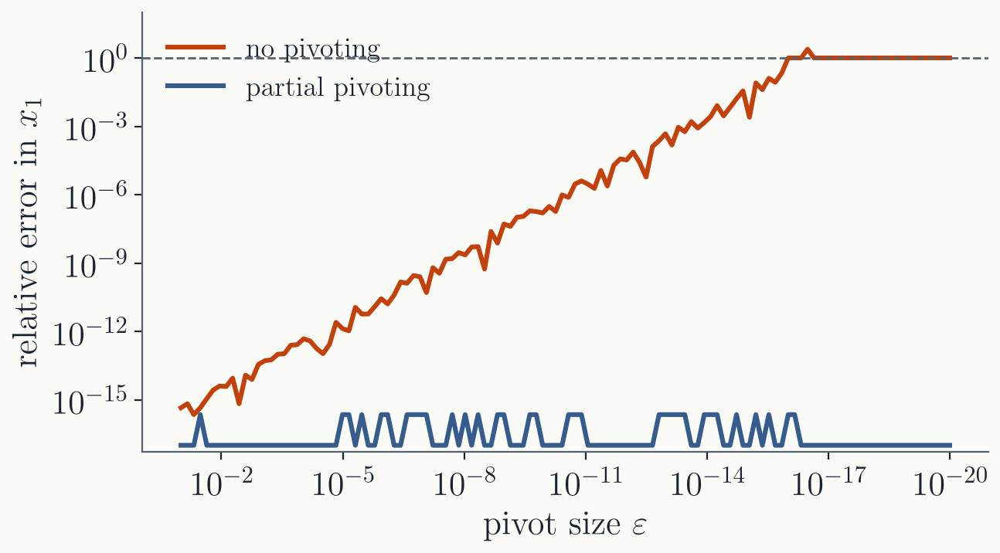
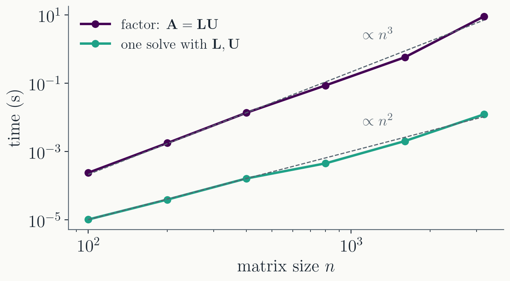
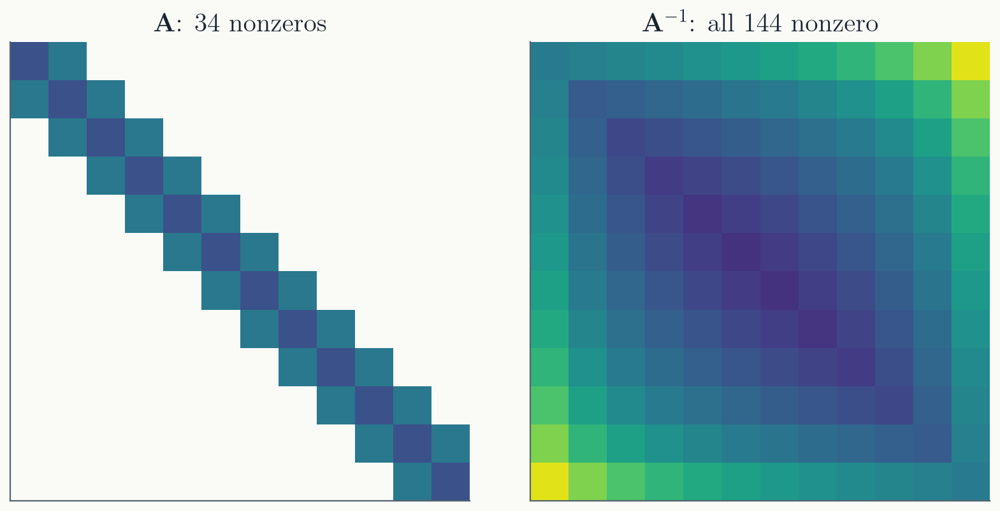

Grids. A BVP on a grid is
one linear system (Lecture 12). A PDE on a 2D grid of
$1000 \times 1000$ points has $10^6$ unknowns.
Newton's method in many
variables. Every iteration solves
$\mathbf{J}\boldsymbol{\delta} = -\mathbf{F}$ (Lecture 12).
Implicit ODE methods do this at every step (Lecture 7).
Fitting data. More data
points than parameters: more equations than unknowns.
Eigenvalue problems. The
particle in a box on a grid becomes
$\mathbf{A}\boldsymbol{\psi} = E\boldsymbol{\psi}$; normal modes
of molecules and structures.
In many large simulations, solving linear
systems is where most of the time goes.
The next two weeks
Lecture 13
Solving $\mathbf{A}\mathbf{x} = \mathbf{b}$: Gaussian
elimination, pivoting, LU decomposition
Lecture 14
Matrices with structure: tridiagonal, Cholesky; the QR
decomposition
Lecture 15
Computing QR; the singular value decomposition
Lecture 16
The SVD at work: least squares, low-rank approximation,
principal component analysis
In practice: use a library
BLAS (Basic Linear Algebra Subprograms):
matrix-vector and matrix-matrix products.
LAPACK (Linear Algebra PACKage): linear
systems, decompositions, eigenvalues. Built on BLAS, written in
Fortran, available everywhere.
In C++: Eigen, with
matrix and vector types that read like the math. In Python:
numpy.linalg and scipy.linalg, which
call LAPACK.
These are faster and more robust than
anything we will write. Our goal is to know what each routine
does, what it costs, and when it can fail.
What kind of system?
$m$ equations for $n$ unknowns,
$\mathbf{A}\mathbf{x} = \mathbf{b}$ with $\mathbf{A}$ an
$m \times n$ matrix:
Square, $m = n$: exactly one
solution, unless $\mathbf{A}$ is singular, meaning one
equation is a combination of the others. Then there is either
no solution or infinitely many.
Over-determined, $m > n$:
usually no exact solution. We look for the best one (least
squares, Lecture 16).
Under-determined,
$m < n$: infinitely many solutions.
The matrix is now
upper triangular: zeros below the diagonal. The last
equation has one unknown, the one above it two, and so on.
Back substitution
Solve from the bottom up:
$$-x_3 = 1 \implies x_3 = -1$$
$$-2x_2 - 5(-1) = -2 \implies x_2 = 3.5$$
$$x_1 + 2(3.5) + 3(-1) = 1 \implies x_1 = -3$$
In general, for an
upper-triangular $\mathbf{U}$:
$\displaystyle x_i = \frac{1}{u_{ii}}\Big(b_i - \sum_{j > i} u_{ij}x_j\Big)$,
for $i = n, n-1, \dots, 1$.
The recipe
For each column $k = 1, 2, \dots, n-1$,
with pivot $a_{kk}$, and for each row $i = k+1, \dots, n$ below
it:
Compute the multiplier
$m_{ik} = a_{ik}/a_{kk}$.
Subtract $m_{ik}$ times row $k$ from row $i$,
on both sides:
$$a_{ij} \leftarrow a_{ij} - m_{ik}\,a_{kj} \quad (j = k, \dots, n),
\qquad b_i \leftarrow b_i - m_{ik}\,b_k$$
This makes $a_{ik} = 0$.
Our example:
$k = 1$ used $m_{21} = 4$ and $m_{31} = 5$; $k = 2$ used
$m_{32} = 1$. Then back substitution.
Cost.
Column $k$ updates $n - k$ rows, each over about $n - k$ entries:
$\sum_k (n-k)^2 \approx n^3/3$ multiply-subtracts, about
$\tfrac{2}{3}n^3$ operations. Back substitution: about $n^2$.
What $n^3$ means
Doubling $n$ makes elimination 8 times slower.
Our own C++ code (with pivoting, next part)
on a laptop: $n = 3200$ takes 9 seconds.
The 2D grid of $10^6$ unknowns:
$(10^6/3200)^3 \approx 3 \times 10^7$ times longer. About 9
years.
Dense elimination does not scale. Large
problems are only solvable because their matrices have structure,
like the tridiagonal matrix of Lecture 12 (next lecture).
Eliminate with the pivot $\varepsilon$:
the multiplier is $1/\varepsilon$, and row 2 becomes
$(1 - 1/\varepsilon)\,x_2 = 2 - 1/\varepsilon$.
For $\varepsilon < 10^{-16}$, both sides
round to $-1/\varepsilon$ (Lecture 1). The information in
row 2 is gone: $x_2 = 1$, and then
$x_1 = (1 - x_2)/\varepsilon = 0$.
Swap the rows first, and the multiplier is
$\varepsilon$: nothing is lost.

Partial pivoting
Before eliminating column $k$, find the row (at or below
row $k$) with the largest $|a_{ik}|$, and swap it into row $k$.
Swap $b$ along with it.
Then every multiplier has
$|m_{ik}| \le 1$: no row is ever multiplied up, so rounding
errors are not amplified.
Swapping columns as well is full
pivoting. It is rarely needed. Partial pivoting is what
LAPACK does.
Always pivot. It costs a search down one
column, almost nothing next to the $n^3$ work.
Part III · LU decomposition
Keep the multipliers
Elimination as matrix multiplication
Each elimination step is a
multiplication by a lower-triangular matrix. For our example:
$\mathbf{L}_1$ is the
identity with $-m_{i1}$ below the diagonal: row $i$ of
$\mathbf{L}_1\mathbf{A}$ is row $i$ of $\mathbf{A}$ minus $m_{i1}$
times row 1.
After all $n - 1$
columns: $\mathbf{L}_{n-1}\cdots\mathbf{L}_2\mathbf{L}_1\mathbf{A} = \mathbf{U}$.
Undo the elimination: $\mathbf{A} = \mathbf{L}\mathbf{U}$
Undoing a step means adding the rows
back: $\mathbf{L}_1^{-1}$ is $\mathbf{L}_1$ with the signs below
the diagonal flipped. Then
$\mathbf{L}$ is just the multipliers, each
in the place it eliminated. Gaussian elimination already computes
the LU decomposition; we only have to keep the multipliers.
With pivoting: $\mathbf{P}\mathbf{A} = \mathbf{L}\mathbf{U}$
The row swaps are collected in a permutation matrix
$\mathbf{P}$: the identity with its rows reordered. Elimination
with partial pivoting gives $\mathbf{P}\mathbf{A} = \mathbf{L}\mathbf{U}$.
With pivoting, this exists for every
nonsingular $\mathbf{A}$. Without it, not always:
$\begin{pmatrix} 0 & 1 \\ 1 & 0 \end{pmatrix}$ has no
$\mathbf{L}\mathbf{U}$.
Storage: $\mathbf{L}$ has 1s on its
diagonal, so $\mathbf{L}$ and $\mathbf{U}$ fit in one $n \times n$
array, overwriting $\mathbf{A}$:
$$\begin{pmatrix} u_{11} & u_{12} & u_{13} \\ l_{21} & u_{22} & u_{23} \\ l_{31} & l_{32} & u_{33} \end{pmatrix}$$
Solving with $\mathbf{L}$ and $\mathbf{U}$
$\mathbf{A}\mathbf{x} = \mathbf{L}(\mathbf{U}\mathbf{x}) = \mathbf{b}$
splits into two triangular solves. Call $\mathbf{y} = \mathbf{U}\mathbf{x}$:
1. Forward substitution,
$\mathbf{L}\mathbf{y} = \mathbf{b}$, top to bottom:
$$y_i = b_i - \sum_{j < i} l_{ij}\,y_j$$
2. Back substitution,
$\mathbf{U}\mathbf{x} = \mathbf{y}$, bottom to top:
Each is about $n^2$
operations. With pivoting, apply the same row swaps to
$\mathbf{b}$ first.
Factor once, solve many times

At $n = 3200$: 9 s to factor, 12 ms for each solve
afterwards, about 700 times less.
Many problems solve with the same matrix
and different right-hand sides:
an implicit method with a fixed step on a linear ODE:
the same matrix every step;
the potential on a grid for many different charge
distributions.
Keep $\mathbf{L}$ and $\mathbf{U}$, and pay
$n^3$ only once.
Why not just compute $\mathbf{A}^{-1}$?
$\mathbf{x} = \mathbf{A}^{-1}\mathbf{b}$
is how we write it on paper. Numerically, it loses on every
count:
It never saves time. With
$\mathbf{L}$ and $\mathbf{U}$ stored, each solve costs $n^2$,
the same as multiplying by $\mathbf{A}^{-1}$. Computing
$\mathbf{A}^{-1}$ means solving with every column of the
identity: about 3 times the work of the factorization, for
nothing.
It is less accurate. Test
on $500 \times 500$ matrices, increasingly close to singular.
How well does the computed $\mathbf{x}$ satisfy the equations
(relative residual $|\mathbf{A}\mathbf{x} - \mathbf{b}|$)?
closeness to singular
mild
severe
LU solve
$2 \times 10^{-15}$
$6 \times 10^{-16}$
$3 \times 10^{-16}$
$3 \times 10^{-16}$
$\mathbf{A}^{-1}\mathbf{b}$
$2 \times 10^{-14}$
$2 \times 10^{-11}$
$4 \times 10^{-8}$
$3 \times 10^{-4}$
The LU answer always satisfies the equations to rounding
precision. The inverse does not, and the error in $\mathbf{x}$
itself is 10 to 25 times larger.
The inverse of a sparse matrix is dense

A tridiagonal matrix has only three
nonzero diagonals. Its inverse has none of that
structure.
With $n = 1000$: $\mathbf{A}$ has 2998
nonzeros, $\mathbf{L}$ and $\mathbf{U}$ have 1999 each, and
$\mathbf{A}^{-1}$ has all $10^6$.
With $10^6$ unknowns, $\mathbf{L}$ and
$\mathbf{U}$ take about 30 megabytes. $\mathbf{A}^{-1}$ would be
$10^{12}$ numbers: 8 terabytes.
We almost never need $\mathbf{A}^{-1}$,
only $\mathbf{A}^{-1}$ applied to a vector. Solving gives exactly
that.
The determinant
It comes for free with LU:
$\det\mathbf{A} = (-1)^{p}\prod_i u_{ii}$, with $p$ the number of
row swaps. For our example: $1 \cdot (-2) \cdot (-1) = 2$.
Cofactor expansion, the formula from linear
algebra class, takes about $n!$ operations: hopeless beyond
$n \approx 20$.
A tiny determinant does not mean
nearly singular: $0.1\,\mathbf{I}$ in 100 dimensions has
$\det = 10^{-100}$ and is perfectly easy to solve.
Summary
Gaussian elimination turns $\mathbf{A}\mathbf{x} = \mathbf{b}$
into an upper-triangular system, solved by back
substitution.
Always pivot: a small pivot destroys the
answer through rounding.
The multipliers form $\mathbf{L}$:
$\mathbf{P}\mathbf{A} = \mathbf{L}\mathbf{U}$. Factor once for
$n^3$, then solve for $n^2$ per right-hand side.
Next time: matrices with structure. The
tridiagonal system of Lecture 12 can be solved in about $n$
operations instead of $n^3$.